coppeliaSim拋物線動力模擬 <<
Previous Next >> inventor 拋物線動力模擬
inventor 模擬測試教學
除了使用CoppeliaSimEdu做動態模擬外，還可以使用inventor去做動態模擬
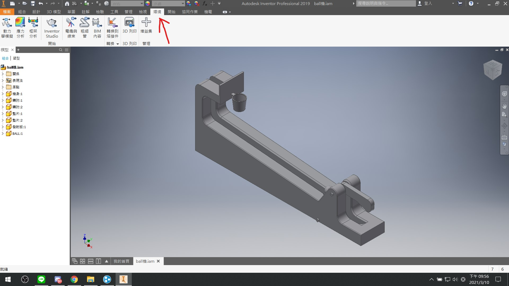
任何模擬都要到環境去做操作
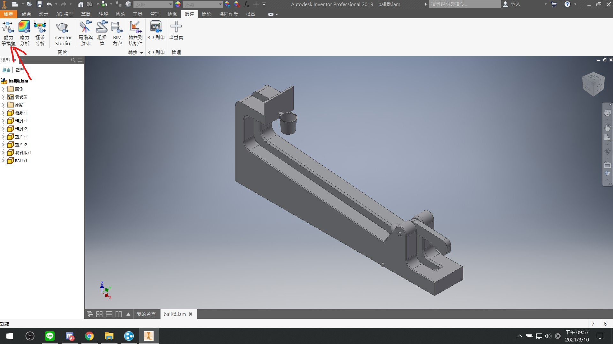
再來我們要做的是拋物線模擬，所以要使用動力學模擬去做操作
一般來說初始畫面就只會有這些東西
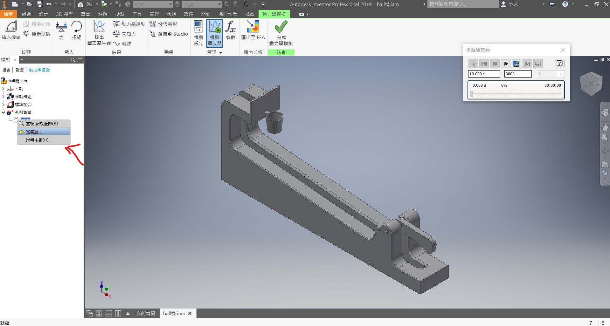
首先我們要先給物件重力
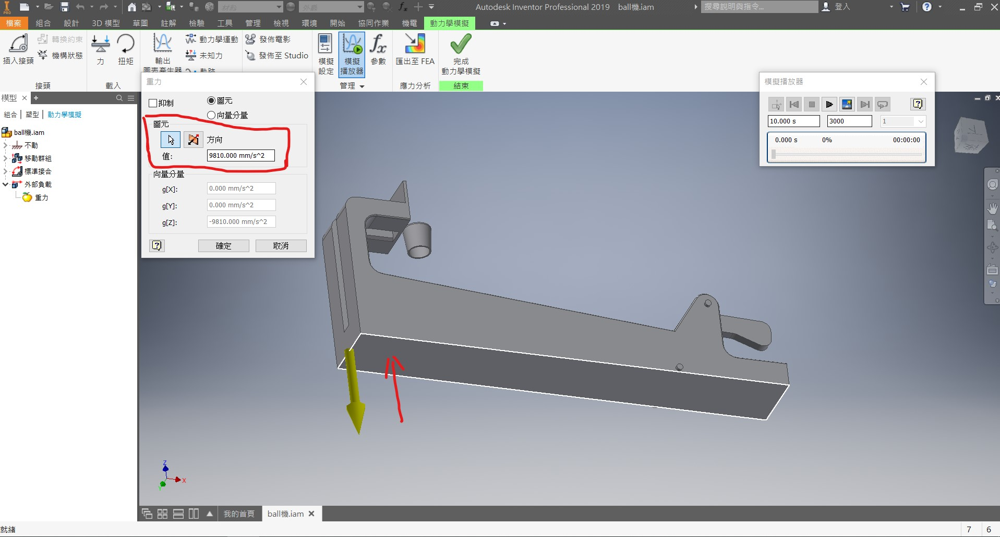
通常我們重力都會給向下的力，如果黃色的箭頭是向上的話，將箭頭方向改為向下即可
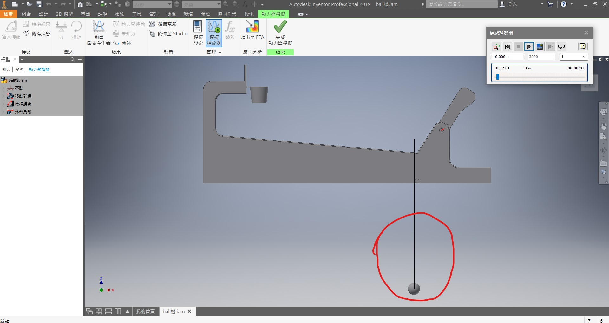
但是設完重力之後，球就會往下掉，並穿透主機構，所以就要讓球與主機構有編輯上的關係，讓球不會穿透主機構
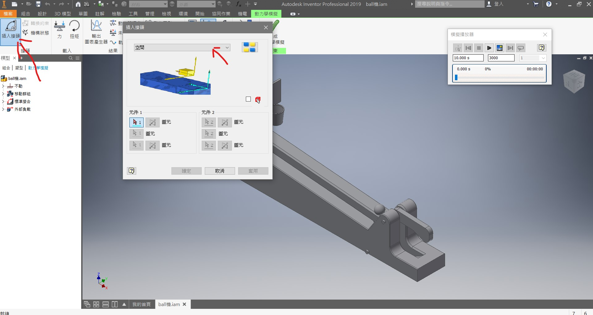
於是我們許要做的事是先插入接頭讓球與主機構有關係
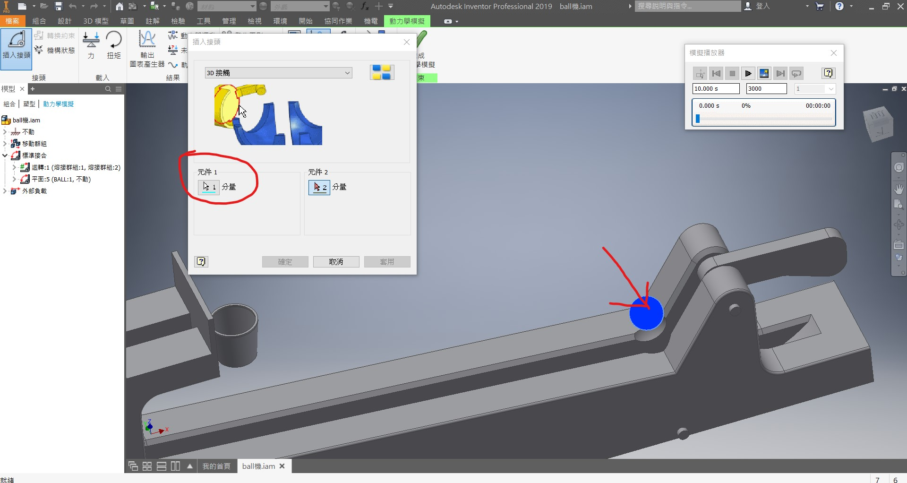
而這邊要使用3D接觸以防球掉下去，再來就先選擇球也就是元件1
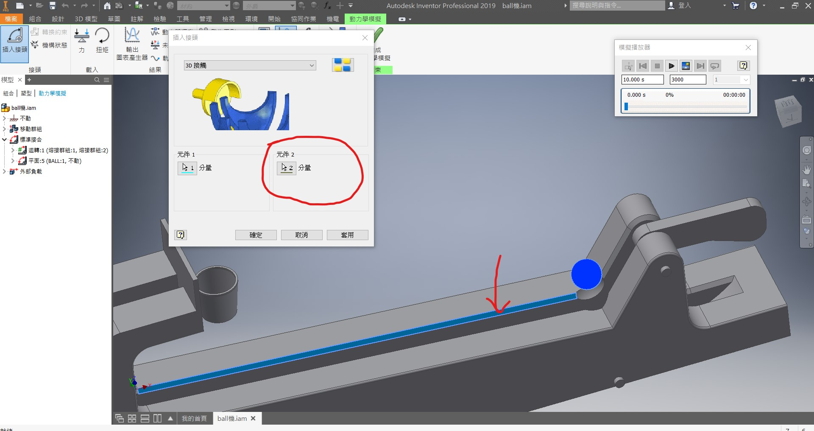
選好元件1之後我們選擇元件2，元件2的任意一個面即可
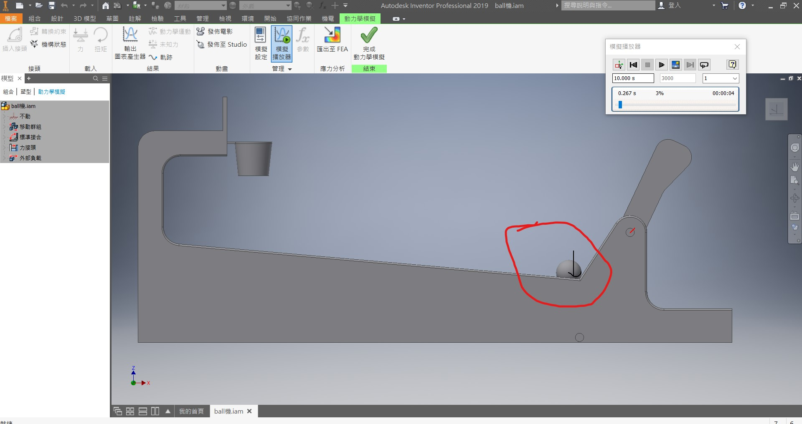
球就不會穿過基座，而是停留在上面
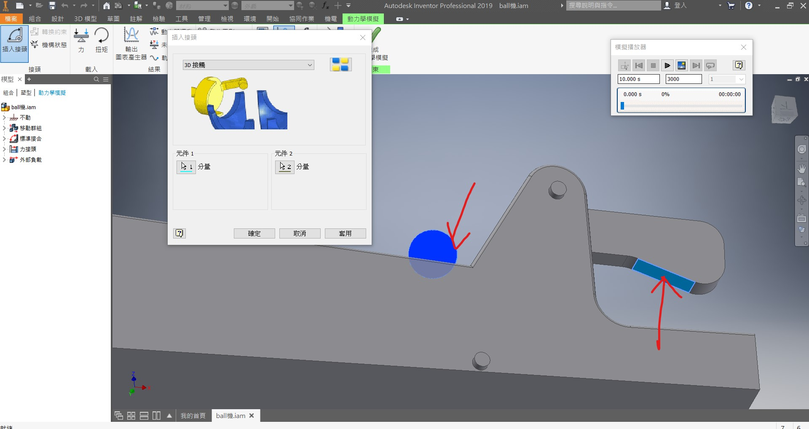
接著再以同樣的步驟，讓球與發球器有接觸
設定完的接觸可從力接頭確認
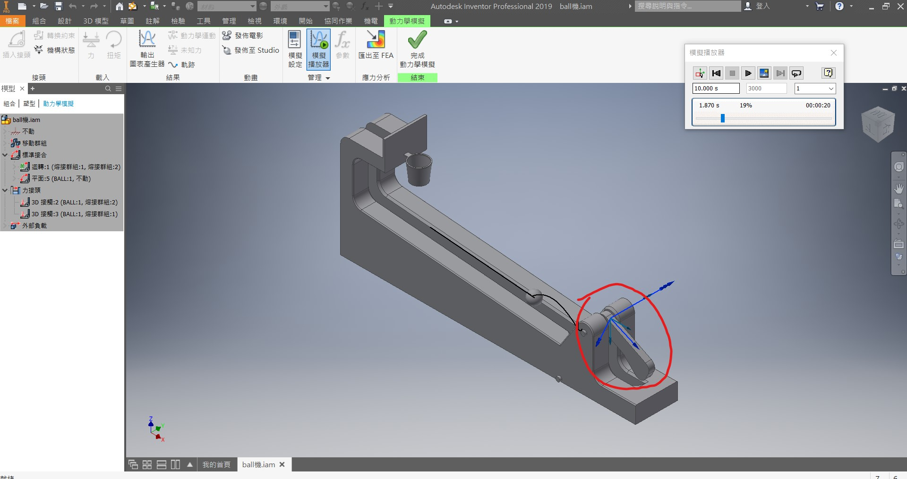
現在我們要讓發球器轉動就要給它設置力量，才能讓它轉動，並去撞擊球
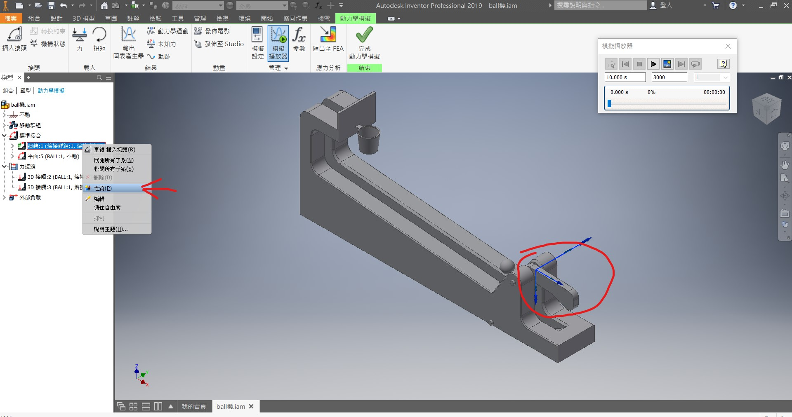
首先我們要讓發球器有力量轉動，就要到性質這邊去做調整
到了性質這邊可以自由調整初始角度
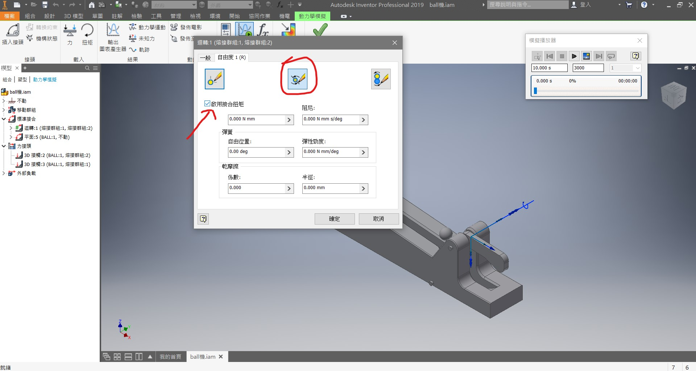
接下來要啟用接合扭矩並去調整所需要的數值即可
這可以選擇輸入常數值或著是輸入圖表產生器
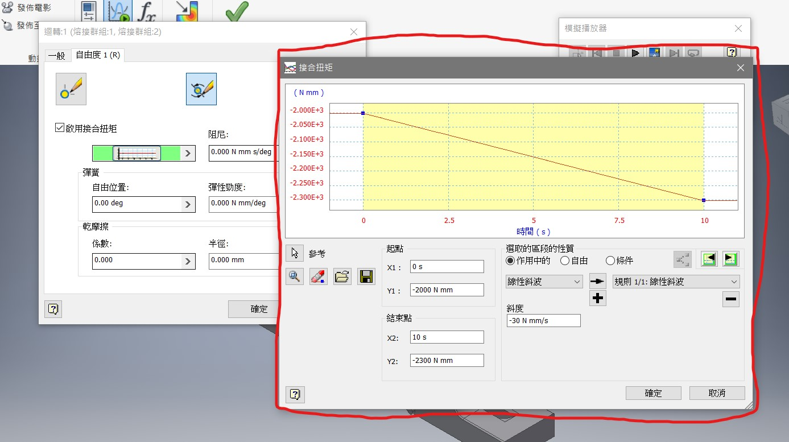
這裡可自由設定線型函數數值
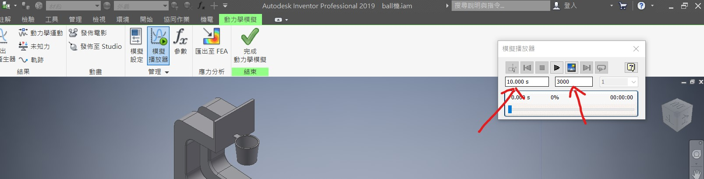
左邊可輸入撥放時間右邊可輸入撥放速度數字越大越慢，反之則快
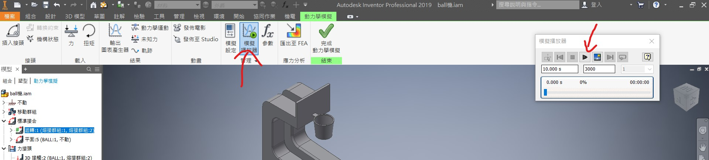
最後打開模擬撥放器點擊撥放即可
coppeliaSim拋物線動力模擬 <<
Previous Next >> inventor 拋物線動力模擬